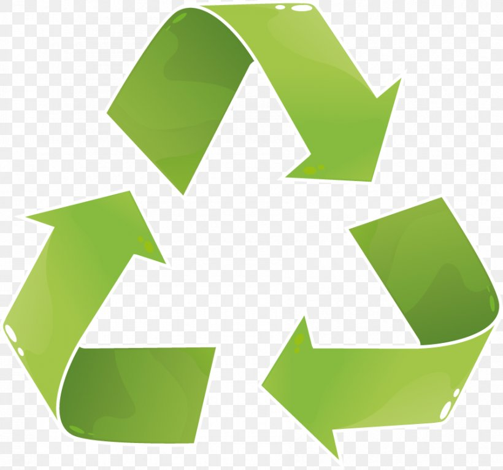

100% Biodegradable
Jute does not pollute our environment


Get In Touch With Us For The Best
Quality Jute Products
Continuous quality control is the main key to success in the world market. We set high standards of quality at all levels of productions.
Simply Natural